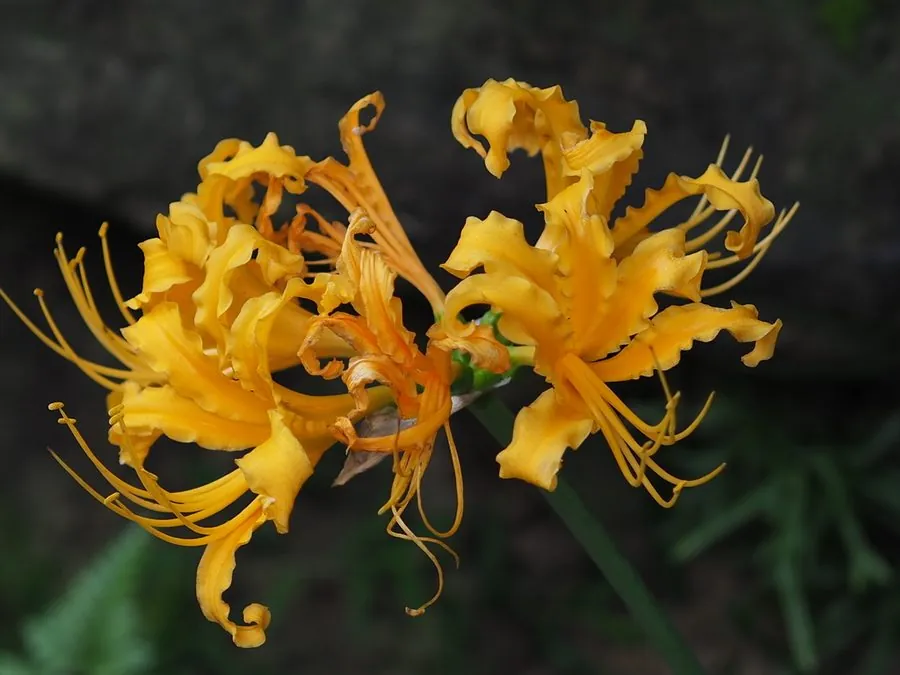

花卉与草本 · 植物界
忽地笑 Lycoris aurea

石蒜科多年生球根花卉，金黄色花朵在秋季突然开放，花形如金色的龙爪，是林下与庭园中的醒目植物，原产中国。
- 分类
- 门被子植物门纲木兰纲目天门冬目科石蒜科属石蒜属
- 栖息环境
- 林下、溪边与岩石缝隙等阴湿处，喜半阴、湿润
- 地理分布
- 原产中国长江流域及以南地区，日本也有分布
- 保护级别
- 暂无评估
物种志
忽地笑为石蒜科石蒜属多年生球根草本，地下具鳞茎。叶片带状，深绿色，花后才抽出。花葶秋季抽出，高 40–70 厘米，伞形花序有花 4–8 朵，花金黄色，花被片 6 枚、向后反卷，边缘皱曲，雄蕊细长伸出，花期 8–10 月；果实为蒴果。
忽地笑原产中国长江流域及以南地区，常生于阴湿林下、溪边和岩石缝隙，喜半阴、湿润和排水良好的环境，耐寒性一般。它秋天开花时叶片尚未抽出，花谢后才长叶，与石蒜一样“花叶不相见”；金黄色的花朵在秋日林下格外醒目，因此得名“忽地笑”。鳞茎含石蒜碱，有毒，不可食用，栽培和观赏时应避免误食，可用于林下和庭院点缀。
形态与习性
- 株高花葶高 40–70 厘米
- 花期8–10 月
- 果期花后结蒴果
- 光照喜半阴，忌强光直射
- 水分喜湿润，忌积水
- 土壤疏松、排水良好的腐殖质土
- 繁殖分球繁殖
- 主要用途林下观赏、庭院点缀（有毒）
趣味知识
- 忽地笑与石蒜同属，花形相似，但花色为金黄色。
- 它也是“花叶不相见”：秋季开花时叶片尚未抽出。
- 鳞茎含石蒜碱，有毒，不可食用，栽培时需注意。
- 金黄色花序在秋日林下十分醒目，因此得名“忽地笑”。